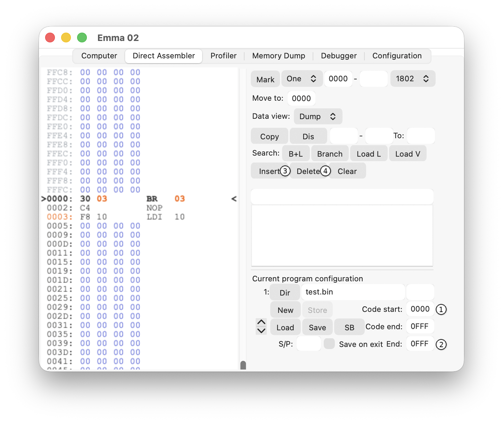
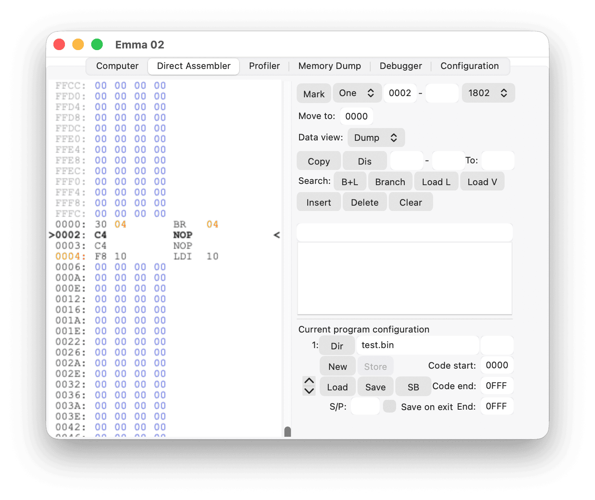
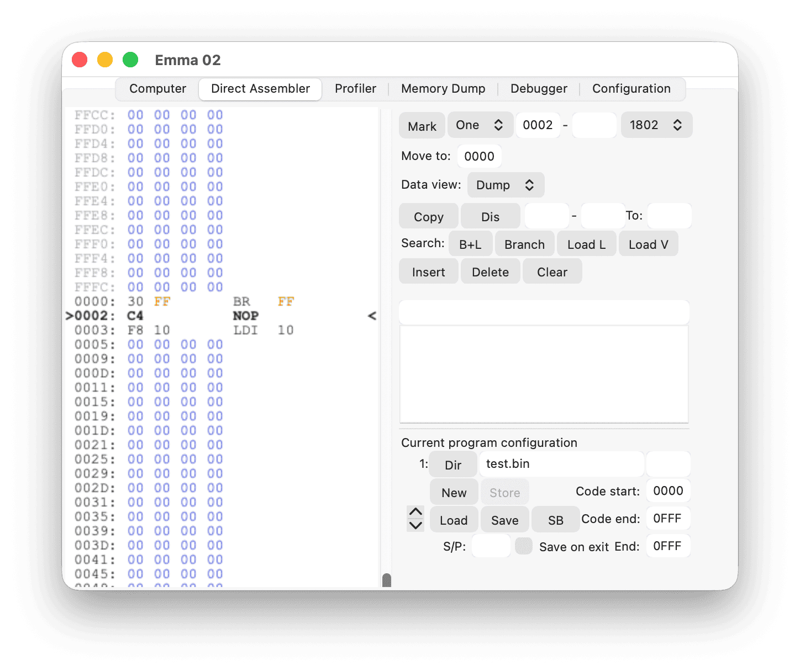
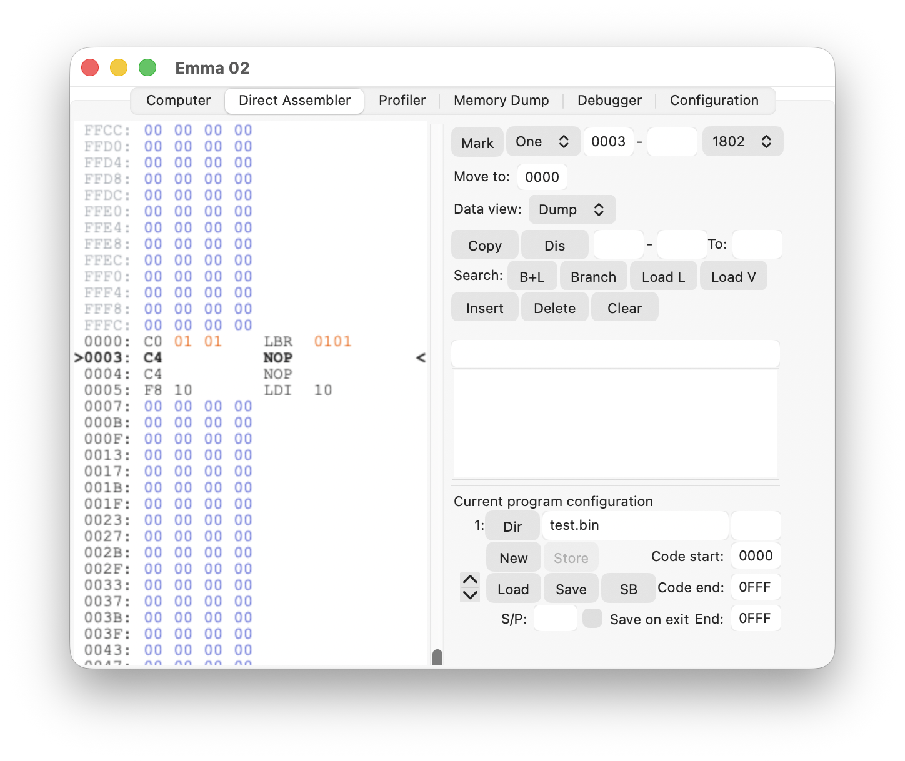
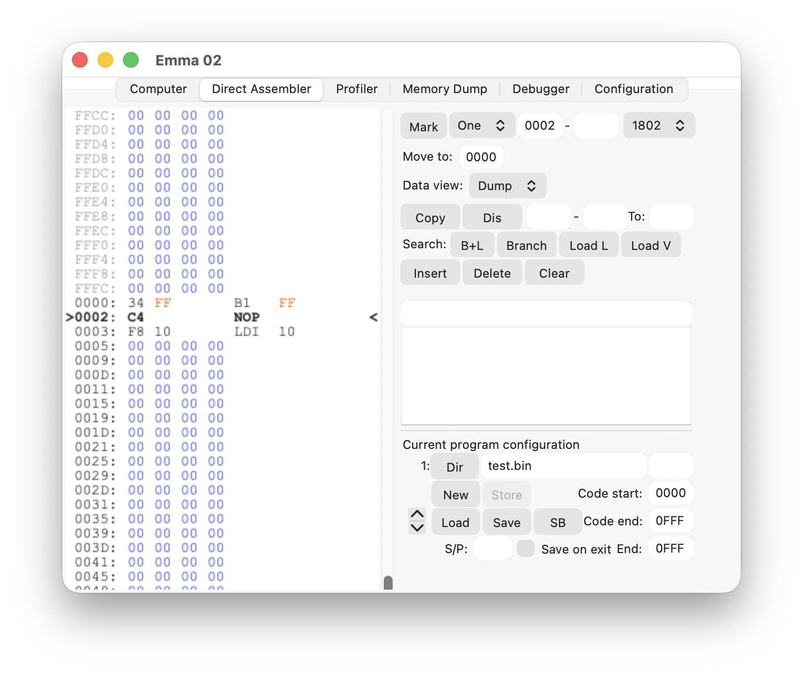
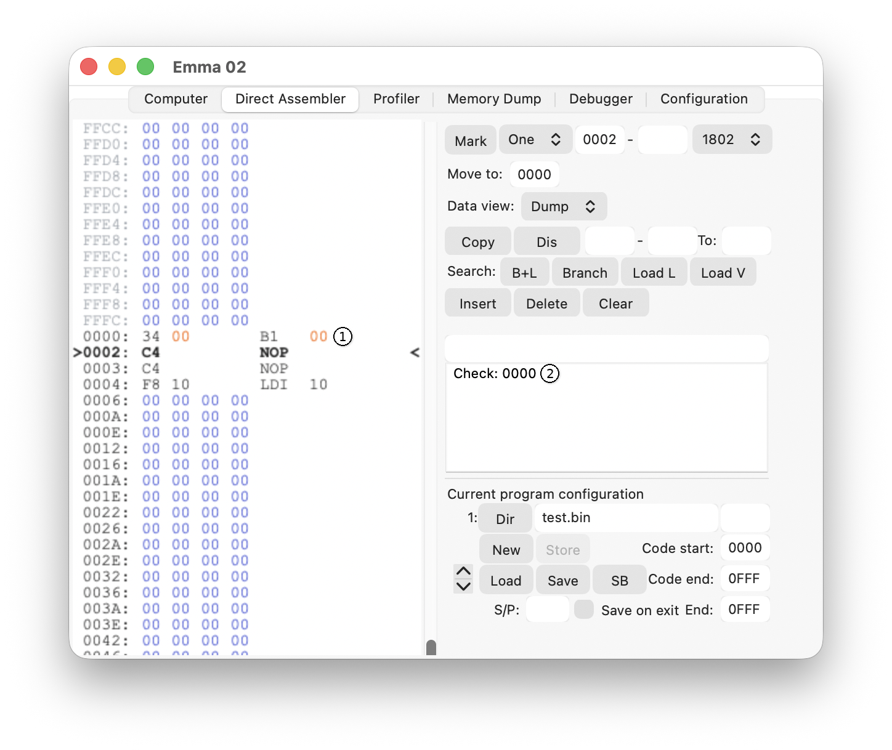
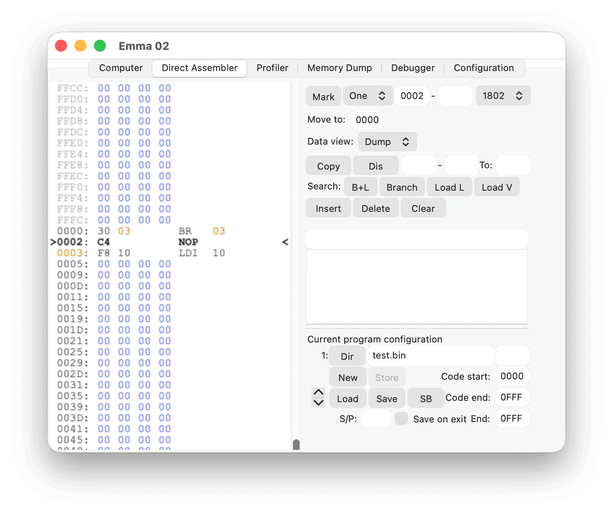
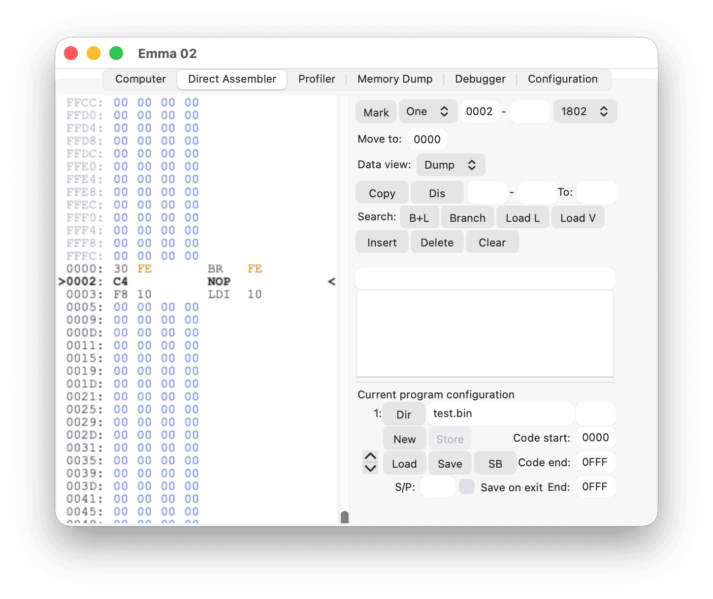

Insert and Delete functions require a program configuration to be defined first. Both functions can only be used between the defined Code start (1) and (Program) end (2) locations. See the Program Configuration and Program Configuration - Example sections.

The following subsections describe the basic functionality of the Insert (3) and Delete (4) buttons.
Pressing the Insert button will insert one NOP, i.e., instruction C4, when used on an address with code; otherwise a 0 will be inserted.
The insert feature will check all code and data areas (defined in Program Configurations) for branches, branch data, reversed branch data, and LDL/LDRL/RLDL instructions. All branches that need to change due to the insert instruction will be corrected.
For example, inserting at address 0002 (hexadecimal) in the code above will change it to:

If, however, the insert is done on or after address 0003 (hexadecimal), the BR 03 will stay the same.
If any short branch cannot be changed due to the insert, it will be changed to a long branch. For example, inserting at address 0002 (hexadecimal) in the code below:

will change it to:

Note: The branch has changed to 0101 (hexadecimal) and not 0100 (hexadecimal), as an extra byte had to be inserted to fit the 3-byte long LBR instruction.
Not all short branches have equivalent long branch instructions (e.g. B1, B2). Therefore, if an insert is done on address 0002 (hexadecimal) in the code below:

the following will happen:

B1 instruction
As shown above, B1 FF changes to B1 00 (1) and a warning is shown in the message field (2) stating that a check or correction is needed on address 0.
Pressing the Delete button will delete the current instruction or byte; one or more 0s will be stored just before the code or program end.
The delete feature will check all code and data areas (defined in Program Configurations) for branches, branch data, and LDL/LDRL/RLDL instructions. All branches that need to change due to the delete instruction will be corrected.
For example, deleting at address 0002 (hexadecimal) in the code below:
will change it to:

If any long branch can be changed to a short branch due to the delete, it will be changed automatically. For example, deleting at address 0003 (hexadecimal) in the code below:
will change it to:

Note: The branch has changed to FE (hexadecimal) and not FF (hexadecimal), as an extra byte could be deleted because the 3-byte long LBR is replaced by a 2-byte long BR.
The following CDP180x instructions will be corrected by the insert and delete function:
BDF xxBGE xxBL xxBM xxBNF xxBNZ xxBN1 xxBN2 xxBN3 xxBN4 xxBPQ xxBPZ xxBQ xxBR xxBZ xxB1 xxB2 xxB3 xxB4 xxLBDF xxxxLBNF xxxxLBNQ xxxxLBNZ xxxxLBQ xxxxLBR xxxxLBZ xxxxThe following macros will also be corrected:
LDL Ry,xxxxLDRL Ry,xxxxRLDL Ry,xxxxThe following sections list the pseudo instructions per variant that will be corrected by the insert and delete function.
Note: None of the short jumps/branches (kk, aa or bb) and references (2aa, 6aa) will be corrected if the insert or delete cause them to go outside of the page. Instead, the address of the instruction will be listed in the message area.
DO aaaaEXEC aaaGO aaGOCR aaGOEZ Rz, aaGOEZ [aa], bbGOEQ Vx, kk, aaGOGE Vy, kk, aaGOGE [aa], kk, bbGOLT Vy, kk, aaGOLT [aa], kk, bbGONC aaGONE Vx, kk, aaGONZ Vx, aaGOTO aaaaKEY Vy, aaKEY [aa], bbLRGI Rx, aaaaADD [2aa], DRDISP0 [2aa]DISP1 [2aa]INPUT [2aa]JNZ DR, 2aaJP 2aaJZ DR, 2aaLD [2aa], DRLD DR, [2aa]LDD [2aa], DRSUB [2aa], DRRSH [2aa]CALL aaaJP aaaJP V0, aaa (not in Chip 8X)LD I,aaaSYS aaaCALL aaaJP aaaSYS aaaNo source code is available for FPA-1, meaning Emma 02 cannot detect running FPA-1 or adjust any calls or jumps.
CALL aaaJP aaaLD [6aa], VxSYS aaaCALL aaaJP aaaJNK Vx, kkSYS aaaCALL aaaJNZ V0, aaaJP FIREA, kkJP 'EF1', kkJP 'EF2', kkJP FIREB, kkJP 'EF3', kkJP COIN, kkJP 'EF4', kkJZ V0, aaaLD RE, aaaSYS aaaCALL aaaJNZ V0, aaaJP aaaJP FIREA, kkJP 'EF1', kkJP 'EF2', kkJP FIREB, kkJP 'EF3', kkJP COIN, kkJP 'EF4', kkJZ V0, aaaSYS aaaCALL aaaJP aaaSYS aaaCALL aaaJP aaaLD [6aa], VxSE Vx, [6aa]SNE Vx, [6aa]SYS aaaCALL aaaJP aaaLD [6aa], VxSNE Vx, [6aa]SYS aaaCALL aaaDJNZ V0, kkJKP n, kkJKP VB, kkJNZ Vx, kkJP aaaJZ Vx, kkLD I,aaaSP DRW, kkSP DRW, JC, kkSYS aaaCALL 6kkCALL 7kkCALL 8kkCALL 10kkCALL 11kkJNZ Vx, kkJP kkJZ Vx, kkLD I, 0aaaLD I, 2aaaLD I, 3aaaLD I, 4aaaCALL aaaJP aaaCALL aaaJP aaaSYS aaaCALL aaaJP aaaJP V0, aaaLD I, aaaSYS aaa